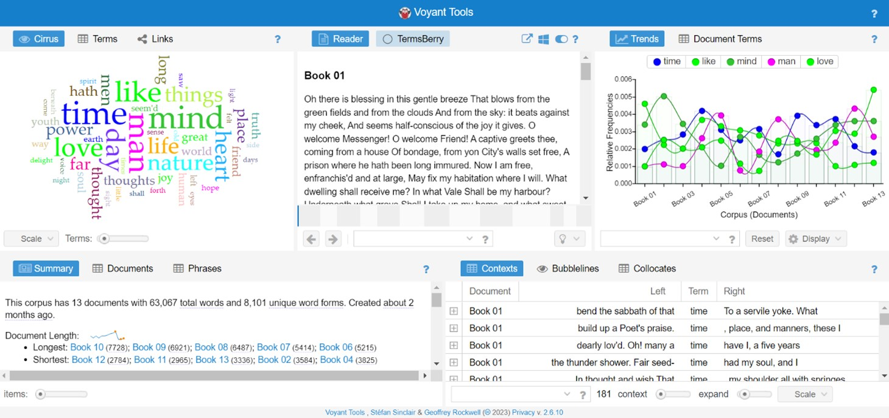

Download PDF version
Note: Not supported in IE or Edge (prior version 18), or in Safari (prior version 10.1).
This project was conceived when I read William Wordsworth’s The Prelude. The eye is an important topic that Wordsworth often contemplates in the poem perhaps more so because he suffered from eye disorders for his lifetime. While he heavily relies on the visual sense to interact with nature, he also cautions against its overpowering over imagination. He writes in book twelfth of The Prelude, that “the bodily eye” is “[t]he most despotic of our senses.” Instead, he emphasizes making a more comprehensive use of senses and sense. In the same poem, he writes, nature should be " [f]eelingly watched" (Italics mine) for people to be taught from it. Here, the combination of active voice (the viewer, or nature feels (I think the subject could be
both) and the passive voice (nature is watched by the viewer) describes the reciprocal relations between nature and the viewer being shaped by virtue of feeling and viewing. Nature seems to be mostly a passive object, but it inspires, spurs, stimulates the viewer. It has an active power that changes the viewer. On the other hand, the viewer also holds agency by performing feeling and watching. And also interesting is that while he focuses on the sense of “the bodily eye,” he brings in other senses by attaching “feelingly.” This multisensorial interactivity made me think about the reader/viewer’s interaction with data visualizations. Although it might not be so applicable especially since nature is a different thing than data visualizations, the phrase is useful to think about data visualizations in digital humanities, like “who is watching and feeling?” “Can I make visualizations feelingly watched, that is, make visualizations that engage other modes than visual?” Also, the phrase is centered on the act of “watching,” which shows his contradictory attitude towards the visual sense that he attempts to transcend yet that still governs him, which might also allude to the limitation of this very project.
Data visualizations, an area of statistics summarization where “graphics [are considered] as a form of argument and evidence,” is one of the methods adopted in the early stage of digital humanities.Visualizations in digital humanities aim to yield more interpretations rather than delivering final arguments. Johanna Drucker takes it further to suggest non-representational visualizations, visual forms as not representing knowledge but themselves as a primary form of knowledge production. Voyant, subtitled “see through your text,” implements the idea by not only providing visualization tools but by allowing sharing the results of dynamic visualizations along with the tools embedded in them. Voyant is “web-based text reading and analysis environment […] designed to facilitate reading and interpretive practices for digital humanities students and scholars as well as for the general public.” It requires basic computer skills and statistics knowledge to create visualizations and share them. Voyant is a _Hermeneutica_tool whose strength is in its interactivity allowing the user to perform and play through “rearranging and manipulation of texts” which can empower readers, especially meaningful for readers of canonical texts (Sinclair and Rockwell). In Voyant, users can easily change their modes of reading back and forth from a larger distant view of the text through visualized analysis to close reading through the tools such as Contexts and Reader that display specific pages and lines. It has some limitations for more nuanced text analysis and in its flexibility, but its convenience, low learning curve, simplicity, and relative transparency of its back end (except a few tools provided in beta version)make it an excellent tool to introduce text analysis and data visualizations in humanities studies.

My question about visualizations tools like Voyant is quite simple: how we can make visualizations not just visual. It may sound counterintuitive and even oxymoronic because visualization tools are fundamentally designed on the idea of visuals as primary modes of knowledge production, which make it unsuitable for low vision or blind users. In “Texturing the Digital Humanities: A Manifesto” (2020), Sari Altschuler and David Weimer contend that "[t]he digital humanities is today overwhelmingly visual."A lot of contributions made by digital humanities focuses on visualization. Not only visualization of data but also making visible cultural artifacts through digitization and archiving. But the efforts have cost other modes of knowledge production and dissemination. An example is the digital surrogates of texts crea ted at the sake of the texture and tactile information of the original physical objects, for which Altschuler and Weimer launched the Touch This Page project. The project aims to reproduce textured knowledge and sensorial experience of the objects. Their project shows that different senses offer different kinds of knowledge. As this project shows, making visualizations multimodal is not merely a matter of vision. It is also about imagining other bodyminds and environments. Visualization tools like Voyant and the interactive, dynamic visuals created from them are already more than visual. Users do not only see through their text, but they also move their body to use them. Voyant as an interactive visualization tool assumes certain abilities in users. In this project, I aim to examine those assumptions. I will also discuss considering users’ different bodyminds lead to imagining ways to present data interpretations in more expressive forms.
I used Dialogica : Thinking-Through Voyant(DTTV) to learn some basics of computer-assisted text analysis and Voyant tools. Among their visualization tools, I selected Trends, ScatterPlot, and TermsBerry that have the most detailed discussions in their tutorials. In addition to Voyant, I used spreadsheets (Google Sheets, MS-Excel) to compile metadata and create simple trends graph, xml editors and HighCharts to create a graph with accessibility features.
Finding electronic copies was the first challenge. I tried to find scholarly editions available online, but I mostly got texts from Project Gutenberg and Wikisource. Because I cannot review the entire texts, they might include some typos and other types of errors.
After compiling texts in .txt files, the next step was cleaning them by deleting all the unnecessary words (ex. copyright statements, author name, chapter titles, running headers, etc.) as well as blank spaces because they can result in false analysis.
In Voyant, texts can be uploaded in.txt, .xls and other file formats but I opted for XML for its flexibility and adaptability. I began with making templates and filled them out (see the linked file). I referred to the xml template in the Voyant as a sample and customized it.
I imported the xml file into Voyant and created visualizations. Voyant provides several ways to export data, tools and visualizations. The most useful feature is exporting a URL for the view ofdata and tools. Users can include the URL in their paper or embed the view in their web page so their readers themselves can interpret the data as well as examine the evidence and arguments drawn from them. The pitfall is that they can sometimes take extremely long to load and easily crash because they contain complex web structure, and they are not designed for assistive technology like keyboard navigation and screen reader. Users need to add accessibility features to the graphics when they publish them in their own works, which is very difficult if they want to publish the view as an interactive visualization that their readers can work with.
With ignorance and bravery, I dared to recreate the Voyant visualizations using HighCharts, a charting library written in JavaScript that provides various tools for creating dynamic interactive visualizations with accessibility features. And as anticipated, I failed.
To use HighCharts tools, I need summarized data to visualize. For Trends, Voyant allows exporting “data as tab separated values(text)” that contain x- and y- axis indexes and values which can be copy-pasted into a spreadsheet or text file. However, for TermsBerry, ScatterPlot, and other visualization tools with complex interactive elements, they do not (or rather cannot) provide summarized data.
As a result, I created a sonified Trends graph with keyboard navigation and other accessibility features, but for visualizations created with TermsBerry and ScatterPlot, so far, I could not find any way to share them in more expressive forms other than adding textual descriptions.
I used GitHub to create web pages to publish results. I need to further revise the contents and design of the website. I will not discuss in detail how to, and instead share the files.
In her letter to her godchild, Elizabeth Hutchinson, (14th Sept [1834?]), Dorothy Wordsworth apologizes for her “ill-penned letter” that she wrote while “l[ying] upon [her] back in bed and with uplifted knees form a desk for my paper” being unable to “sit up more than from 4 to 6 hours in the day” (203-4, Letters of Dorothy Wordsworth). Being confined to bed for her illness, Wordsworth adjusts her body to write, using part of her body as a desk. The letter presents a nice description of technologies involved in letter writing: letter as communication method, writing devices like pen, paper, and a desk made with her knees, and the assumption of writing to be done in a sitting position. Even in the seemingly simple task of writing a letter, she needs to configure the movement of her body for her illness and the environment (her sick bed) to use technologies built for the normative body. And her illness becomes embodied in the " ill-penned letter." While working on this project, how the reader-user might engage with my work has been the primary consideration. As critics of universal design contend, I cannot possibly imagine all the possibilities of different bodily experiences. However, as they also argue, accessibility and universal design is a process, not a product. As Jonathan Hsy puts it, embodied variance is messy. Multimodality cannot be achieved with the aims of Universalism. With acknowledging that, making visualizations accessible to everyone should not be the ultimate goal. Rather, the process of trying to make it accessible, we are made to imagine different ways of understanding the world and maneuvering the tools, which will reveal to us normative, ableist assumptions made in digital environments and scholarship.
In “Multimodality in Motion: Disability and Kairotic Spaces,” Sushil K. Oswal describe well the accessibility issues visually impaired users encounter daily on the internet:
For those visually impaired who land in the category of stone blind, the screen readers offer no such consolation. Screen readers either read what they can see on the screen if it’s presented in a readable format, or they are silent. Even worse, if users confront the screen reader version of the monster—an unscripted version of a Java patch or a fancy Flash gig—the screen reader simply freezes the PC, requiring a hard reboot. (emphasis mine)
Through the word “silent,” Oswal aptly presents the problem of the absence of appropriate alt-text or other formats readable to screen readers and demonstrates how digital environments are tangled with multimodality issues.[1] The silence of images expands a visual mode of experience tto the audio. I used HighCharts sonification tool to present a trends chart in sound as a way of breaking the silence. The tool has been developed as an accessibility feature, but listening to the sound of data can also provide different experience and insight than the visual.[2] Multimodality can be a way to discovery.[3]
Altschuler, Sari, and David Weimer. “Texturing the Digital Humanities: A Manifesto.” PMLA, vol. 135, no. 1, 2020, pp. 74-91. Web.
Drucker, Johanna. Visualization and Interpretation: Humanistic Approaches to Display. The MIT P, 2020.
El Khatib, Randa, and Shawna Ross. “A Beginner’s Guide to Using Voyant for Digital Theme Analysis.” 2022. doi.org/10.17613/42c8-mk80.
Godden, Richard H. and Jonathan Hsy, “Universal Design and Its Discontents.” Disrupting the Digital Humanities, 2018.
Sinclair, Stéfan, and Geoffrey Rockwell. “Text Analysis and Visualization: Making Meaning Count.” A New Companion to Digital Humanities,2016.
Yergeau, M. Remi et al. “Multimodality in Motion: Disability and Kairotic Spaces.” Kairos: A Journal of Rhetoric, Technology, and Pedagogy, 18 (1), 2013, retrieved December 30, 2023, kairos.technorhetoric.net/18.1/coverweb/yergeau-et-al/index.html.
This also reminds me of the following lines from William Wordsworth’s Tintern Abbey poem:
↩. . . with an eye made quiet by the power
Of harmony, and the deep power of joy,
We see into the life of things.
There should be more developed projects for sonification of literary or other kinds of texts, but I think this sonification tool could be a great start. The chart I made might not be such great an example since it contains a very small variety of sounds. But with more complex ones, it will be interesting to hear the intricate, delicate, differences. ↩
It should be noted that multimodality and accessibility do not always work well together because like “the screen reader version of the monster,” implementing multimodality can result in crashes and freezes on computer. ↩